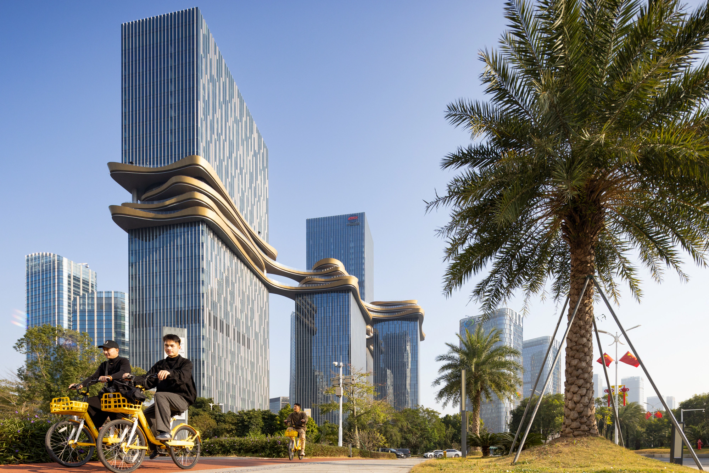
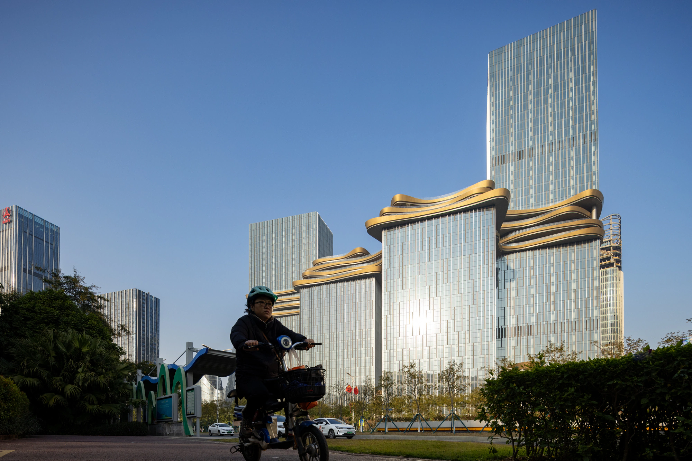
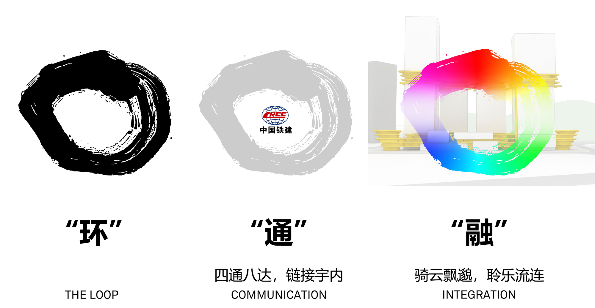
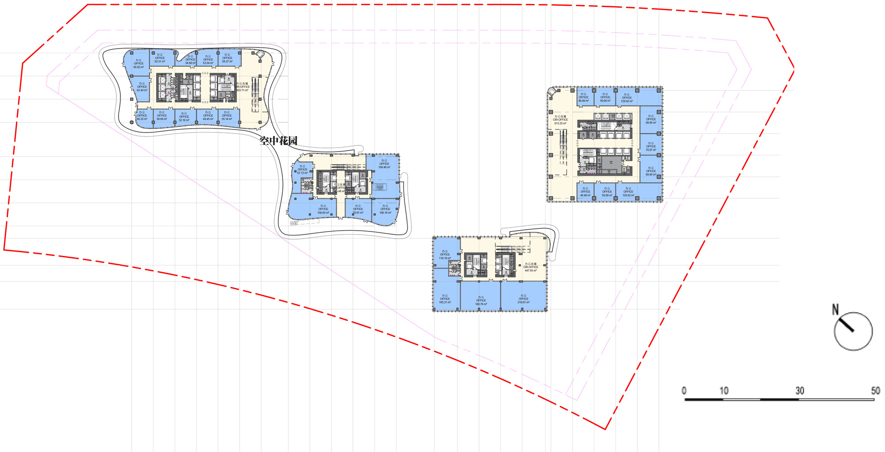
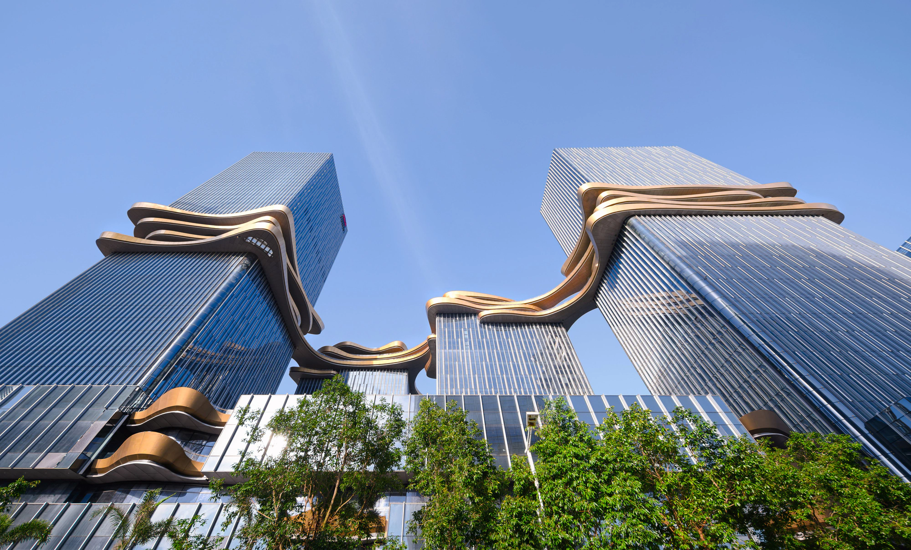
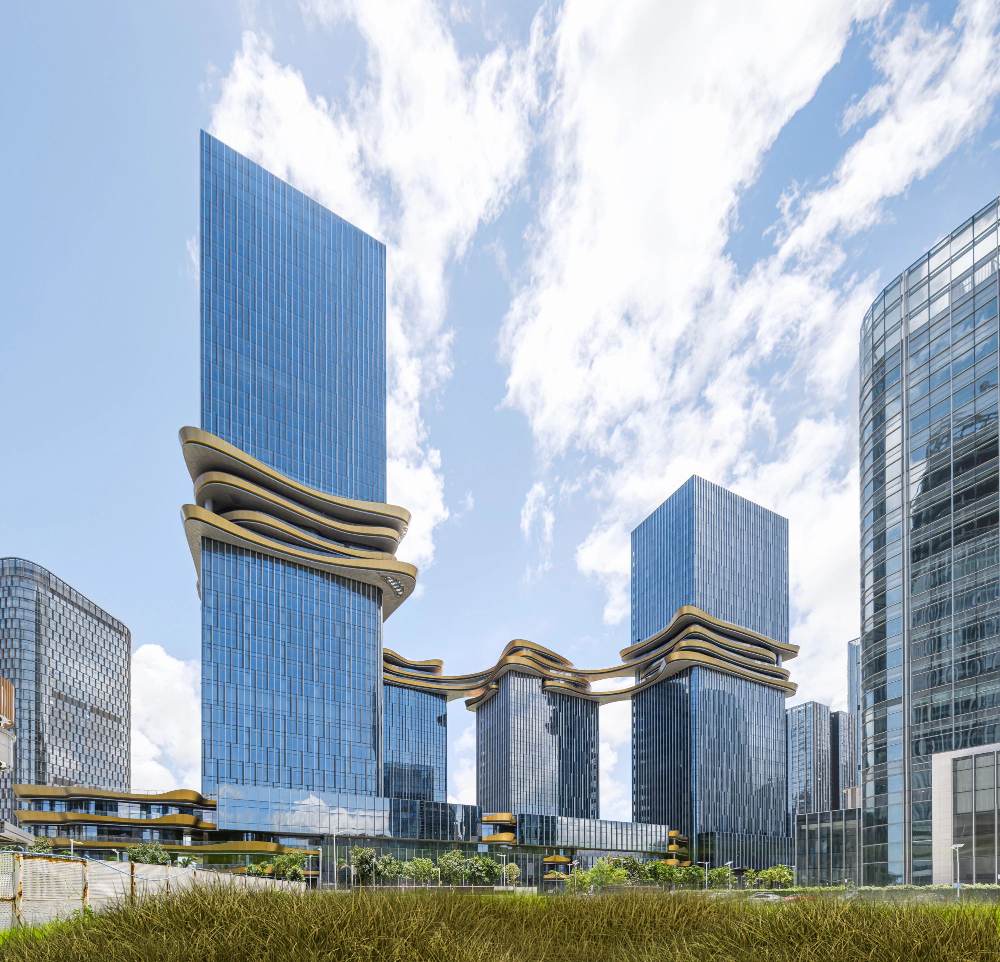
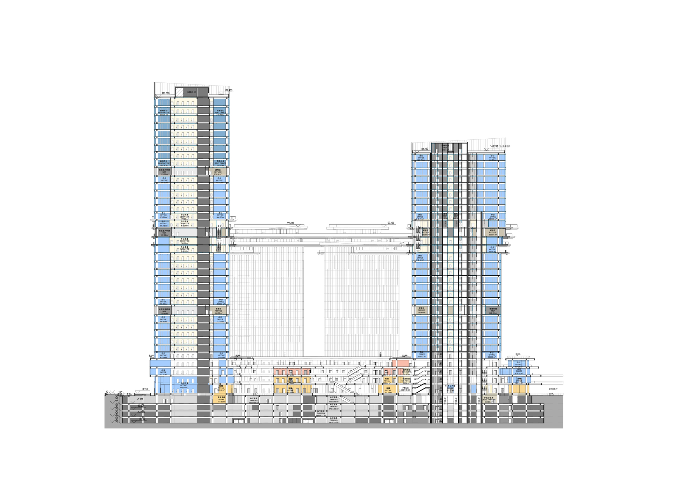
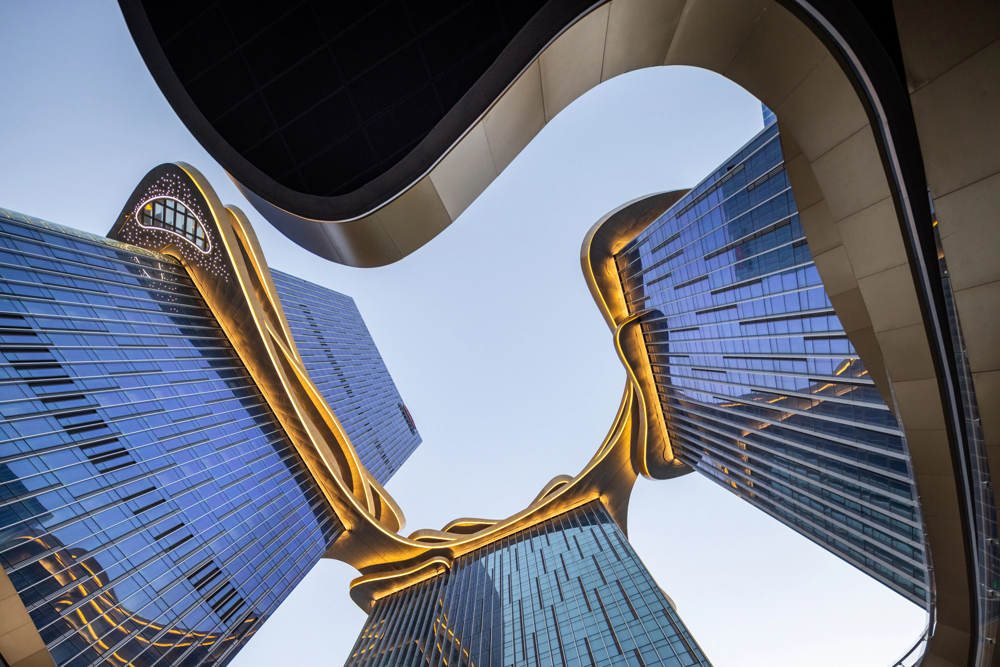

Hengqin CRCC Plaza
A mixed-use urban complex between Hengqin and Macau.
Four towers, a commercial podium and a continuous sky bridge form a connected vertical landscape for work, retail and public life.
- Role
- Architecture intern
- Practice
- Aedas
- Client
- China Railway Construction Investment Group

02 / Urban threshold
A new address between Hengqin and Macau.
Located in the port service area on the northeast of Hengqin Island, the project is framed by the island's transport network, the coast and the skyline of Macau. The proposal turns this strategic position into a mixed-use urban destination rather than a single isolated building.

03 / Ring, connect, merge
The sky bridge makes the mixed-use brief legible.
The design concept responds through three linked ideas: circulation, connection and integration. A golden sky bridge connects the four towers with a three-dimensional loop, while the podium and rooftop gardens extend the public realm vertically.


04 / Vertical landscape
Four towers, one continuous public network.
Office towers rise from a commercial base of retail, leisure and shared facilities. The looped bridge, rooftop terraces and viewing platforms bring social space into the upper levels and create a sequence of elevated gardens above the city.



05 / Material and atmosphere
A light structure against the coastal horizon.
Champagne and silver aluminium articulate the sky bridge, while the tower facades use vertical metal fins and low-e insulated glass. The material palette gives the complex a precise, reflective character that changes with the coastal light.
